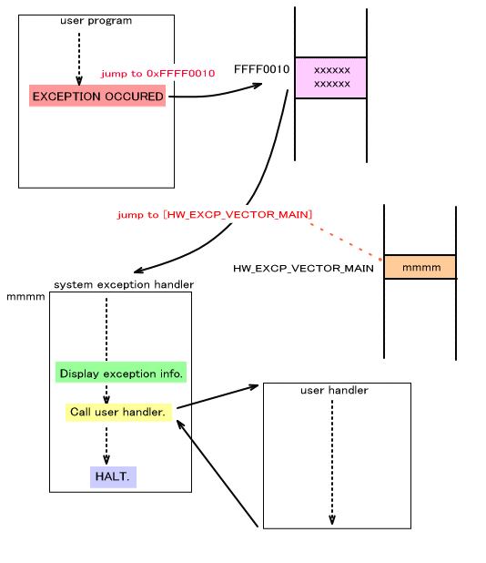

This page explains the exception display system used by the TWL-SDK to show information about exceptions generated on the ARM processors.
The following exceptions exist for the ARM processors.
| Exception Type | Normal Vector Address | High Vector Address |
|---|---|---|
| Reset | 0x00000000 | 0xFFFF0000 |
| Undefined instruction | 0x00000004 | 0xFFFF0004 |
| Software interrupt | 0x00000008 | 0xFFFF0008 |
| Pre-fetch abort | 0x0000000C | 0xFFFF000C |
| Data abort | 0x00000010 | 0xFFFF0010 |
| IRQ | 0x00000018 | 0xFFFF0018 |
| FIQ | 0x0000001C | 0xFFFF001C |
Out of this list, the reset interrupt and FIQ exceptions are used by the system or debugger, so they cannot be used by users.
The IRQ exception can be used as an interrupt. See the following for information about interrupts. Interrupts (Overview)
Some of the undefined instructions are used by the debugger for breakpoints and other such data.
When an exception occurs, control is transferred to the pertinent vector address, as shown in the table above. This normally involves use of high vector addresses.
The ARM processor specifications allow you to set the exception vector addresses at either the range 0x00000000 to 0x0000001C or the range 0xFFFF0000 to 0xFFFF001C. The former are called normal vectors, and the latter are called high vectors.
The OS_SetExceptionVectorLower0x0000000 to 0x0000001C (normal vectors).
The OS_SetExceptionVectorUpper0xFFFF0000 to 0xFFFF001C (high vectors).
The TWL-SDK uses the high vectors by default. Unless you have a special reason, use the high vectors and do not change this setting.
The TWL-SDK contains a mechanism for displaying the context (the contents of the registers and the CPU status) to the debug window (console) when an exception occurs. This exception display mechanism is initialized using the OS_InitException function, but this function is called from the OS_Init function, so no real preparation is required in applications that use the OS_Init function.
The example below shows what is displayed. The error output from the OS_FPrintf function is used to display the information.
**** Exception Occurred ****
R00=00000000 R01=12345678 R02=2000001F R03=02030340
R04=200000D7 R05=0000000F R06=00000001 R07=00000002
R08=02FFFFA8 R09=04000130 R10=00000001 R11=0201C25C
R12=0200E240 SP =02FE3750 LR =02005130 PC =02005140
CPSR=2000001F SPSR=00000000 CP15=0005707D
Note that when an exception occurs on IS-TWL-DEBUGGER, the debugger itself will display this. (This is possible on IS-TWL-DEBUGGER v1.06 and later.) The format of the display will differ from that shown above. The example below shows what is displayed.
[[ Fatal error: Execution stopped because "data access exception" occurred on the ARM9CPU.]]
Symbol:STATIC:0x02000C8C
02000C8C:E591B000 LDR R11, [R1]
CPSR:6000001F
R0:0000007B R1:00000000 R2:00000100 R3:000003E8
R4:000007D0 R5:00000BB8 R6:00000FA0 R7:00001388
R8:02000C84 R9:000000FF R10:000000EE R11:00000000
R12:00000123 SP:027E3750 LR:02000C5C PC:02000C8C
With IS-NITRO-DEBUGGER and actual Nintendo DS and TWL systems, when exceptions occur, control can be transferred to a user-specified exception handler. To do this, register the handler with the OS_SetUserExceptionHandler
The table below indicates whether the context can be displayed in the debug window (console) when an exception occurs and whether control can be moved to the user's exception handler. The table is broken down by operating environment.
As indicated in "Displaying Context During Exceptions," the SDK displays for IS-NITRO-DEBUGGER, and the debugger displays for IS-TWL-DEBUGGER, shown in the column entitled "Displaying Context During Exceptions" of the table. If the SDK displays the context, the OS_FPrintf function used for display cannot be used in the FINALROM build. Context cannot be displayed in the FINALROM build when it says OK (as displayed by the SDK). OK (as displayed by the debugger) means that the debugger displays the context. Therefore, displaying the context is possible even in the FINALROM build.
Also, items under "Calling User's Exception Handlers" in the table are not dependent on the type of build (whether or not it was a FINALROM build).
Note that this table is divided by the operating environment. For example, the context cannot be displayed on IS-TWL-DEBUGGER when an exception occurs with a hybrid ROM that is running in NITRO mode, but it can be displayed on IS-NITRO-DEBUGGER if the same ROM is running in the same mode.
| For NITRO Mode: |
||
|---|---|---|
| Operating Environment | Displaying Contexts During Exceptions: |
Calling Users' Exception Handlers: |
| Actual DS unit | N/A (There is no console) | OK |
| Actual TWL unit | N/A (There is no console) | OK |
| IS-NITRO-DEBUGGER | OK (displayed by SDK) | OK |
| ENSATA EMULATOR | ??? | ??? |
| IS-TWL-DEBUGGER(For standard development: ARM9) | OK (displayed by debugger) | N/A |
| IS-TWL-DEBUGGER (For component development: ARM9 + ARM7) | OK (displayed by debugger) | N/A |
| For TWL Mode: |
||
| Operating Environment | Displaying Context During Exceptions: |
Calling Users' Exception Handlers: |
| Actual TWL unit | N/A (There is no console) | OK |
| IS-TWL-DEBUGGER (For general-purpose development: ARM9) | OK (displayed by debugger) | N/A |
| IS-TWL-DEBUGGER (for component development: ARM9 + ARM7) | OK (displayed by debugger) | N/A |
The flow for the following exception is for IS-NITRO-DEBUGGER and the actual Nintendo DS and TWL systems. CPU operations stop at the point when the exception occurs on IS-TWL-DEBUGGER, and control shifts to the debugger. Operations, therefore, are as shown in the following figure.
When an exception occurs, control jumps to the exception vector region on IS-NITRO-DEBUGGER and the actual Nintendo DS and TWL systems. As previously mentioned, the high vectors are usually used for exception vectors, but for a data abort exception, control will move to 0xFFFFFF10.
Control then moves to the address stored in HW_EXCP_VECTOR_MAIN (0x2FFFFD9C) in the system area. (In the ARM7, this address is located at the dedicated work RAM offset 0x7FDC.) The address of the TWL-SDK's exception handler is set here.
The TWL-SDK's exception handler will display the context when an exception occurs, and then call the user-defined handler registered with the OS_SetUserExceptionHandler function, if such a handler exists.
The program then stops.

List of OS Functions (Exception)
2009/07/01 Described the differences in behavior depending on the environment.
2008/04/18 Added a table of context display environments when exceptions occur.
2005/03/08 Standardized the Japanese term for "interrupt."
2004/12/14 Revised terminology and word endings.
2004/11/16 Initial version.
CONFIDENTIAL